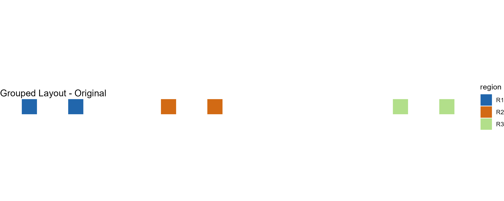
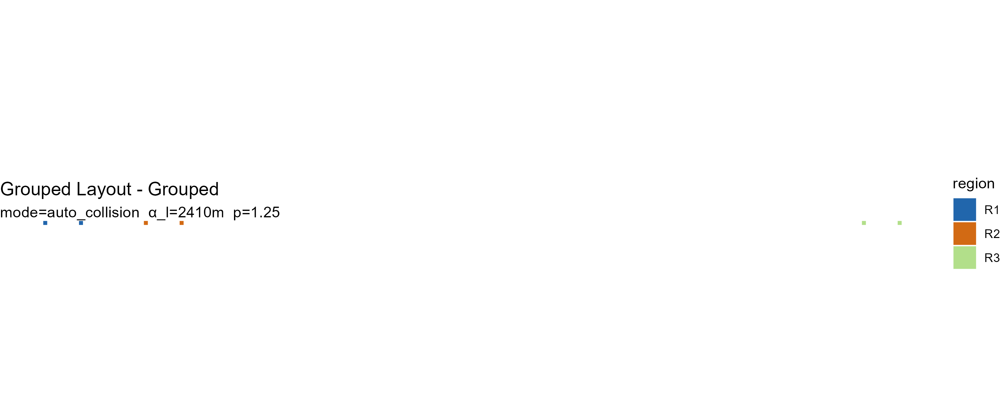
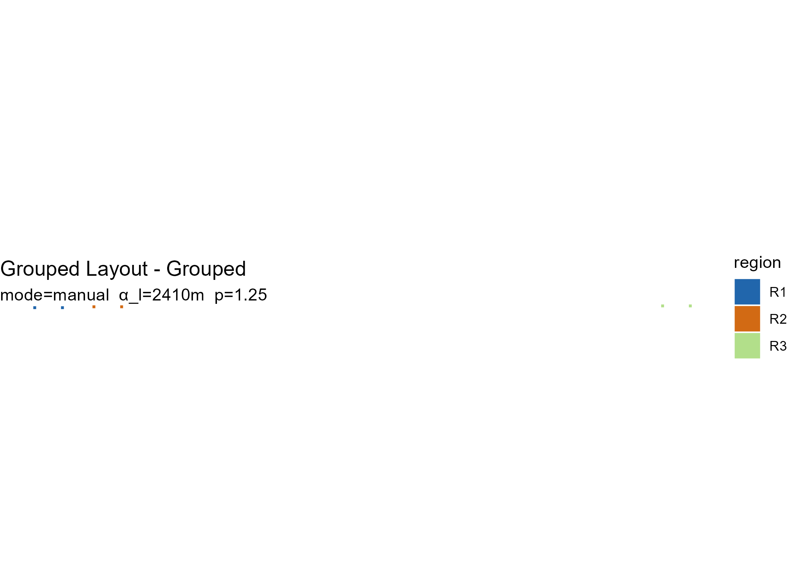

Overview
explode_grouped() extends the core two-level
exploded-map workflow with a three-level hierarchy for multi-region or
national-scale layouts.
This grouped extension is most useful when a standard two-level explosion still leaves region blocks visually crowded or difficult to compare across a larger spatial extent.
The three levels are:
Level 1 — Local explosion. Units within each parent region are displaced using the centroid-driven field from the core algorithm. The geometric guarantees of Propositions 1–3 apply at this level.
Level 2 — Radial anchor placement. Parent region centroids are displaced radially outward from the national centroid to generate initial anchor positions for each region block.
Level 3 — Collision-aware refinement (optional). Overlapping anchors are iteratively repelled while a spring term maintains proximity to the original radial targets.
Levels 2 and 3 preserve structural grouping and directional correspondence rather than topological coverage. The formal geometric guarantees of Propositions 1–3 apply strictly at Level 1.
A synthetic grouped example
We create a small dataset with six units in three regions, spread
across a wider spatial extent than the two-region example in
vignette("getting-started").
sq <- function(xmin, ymin, size = 1000) {
st_polygon(list(matrix(
c(xmin, ymin,
xmin + size, ymin,
xmin + size, ymin + size,
xmin, ymin + size,
xmin, ymin),
ncol = 2,
byrow = TRUE
)))
}
geom <- st_sfc(
sq(0, 0), sq(3000, 0), # R1
sq(9000, 0), sq(12000, 0), # R2
sq(24000, 0), sq(27000, 0), # R3
crs = 3857
)
x <- st_sf(
id = paste0("u", 1:6),
region = c("R1", "R1", "R2", "R2", "R3", "R3"),
geometry = geom
)Anchor modes
explode_grouped() supports three anchor placement
modes:
| Mode | Description |
|---|---|
"auto" |
Level 2 only — radial placement without collision resolution |
"auto_collision" |
Level 2 + Level 3 — radial placement with iterative refinement |
"manual" |
User-supplied anchor coordinates |
Automatic grouped layout
The simplest call uses mode = "auto":
g_auto <- explode_grouped(
x,
region_col = "region",
mode = "auto",
plot = FALSE
)
#> Warning: st_centroid assumes attributes are constant over geometries
#> Warning: st_centroid assumes attributes are constant over geometries
#> Level 1: Applying local explosion (alpha_l = 2410 m)...
#> Warning: st_centroid assumes attributes are constant over geometries
#> Warning: st_centroid assumes attributes are constant over geometries
#> Level 2: Computing anchor positions (mode = auto)...
#> Warning: st_centroid assumes attributes are constant over geometries
#> Warning: st_centroid assumes attributes are constant over geometries
#> Applying anchor displacement...
#> Warning: st_centroid assumes attributes are constant over geometries
class(g_auto)
#> [1] "grouped_exploded_map" "list"
print(g_auto)
#>
#> -- Grouped Layout (grouped) ------------------------------
#> n units : 6
#> n regions : 3
#> mode : auto
#> alpha_l : 2.4 km
#> p : 1.25
#> kappa : 1.8
#> padding : 50 kmThe result is a grouped_exploded_map S3 object, which
also inherits from exploded_map:
names(g_auto)
#> [1] "sf_orig" "sf_local" "sf_grouped" "sf_grouped_wgs"
#> [5] "stats" "params" "anchors" "plots"
#> [9] "diagnostics"Plot the grouped layout:
plot(g_auto)Collision-aware grouped layout
mode = "auto_collision" adds Level 3 refinement.
Overlapping region blocks are iteratively repelled while a spring term
pulls them back toward their radial targets:
g_collide <- explode_grouped(
x,
region_col = "region",
mode = "auto_collision",
plot = FALSE
)
#> Warning: st_centroid assumes attributes are constant over geometries
#> Warning: st_centroid assumes attributes are constant over geometries
#> Level 1: Applying local explosion (alpha_l = 2410 m)...
#> Warning: st_centroid assumes attributes are constant over geometries
#> Warning: st_centroid assumes attributes are constant over geometries
#> Level 2/3: Computing anchor positions (mode = auto_collision)...
#> Warning: st_centroid assumes attributes are constant over geometries
#> Warning: st_centroid assumes attributes are constant over geometries
#> Anchor solver reached max iterations (60). Layout may have residual overlaps.
#> Applying anchor displacement...
#> Warning: st_centroid assumes attributes are constant over geometries
plot(g_collide)The anchor table reports the resulting block radii and coordinates:
g_collide$anchors[, c("region", "block_radius", "anchor_x", "anchor_y")]
#> # A tibble: 3 × 4
#> region block_radius anchor_x anchor_y
#> <chr> <dbl> <dbl> <dbl>
#> 1 R1 3910. -76184. 500
#> 2 R2 3910. -54174. 500
#> 3 R3 3910. 102879. 500Viewing all stages
plot(g, "all") shows the original, locally exploded, and
grouped layouts side by side:
plot(g_collide, "all")
#> NULL
Inspecting anchor positions
layout_regions() computes anchor positions as a
standalone step, which is useful for custom workflows or manual
adjustment:
anchors <- layout_regions(
x,
region_col = "region",
mode = "auto"
)
#> Warning: st_centroid assumes attributes are constant over geometries
#> Warning: st_centroid assumes attributes are constant over geometries
anchors[, c("region", "block_radius", "n_units", "anchor_x", "anchor_y")]
#> # A tibble: 3 × 5
#> region block_radius n_units anchor_x anchor_y
#> <chr> <dbl> <int> <dbl> <dbl>
#> 1 R1 1500 2 -73279. 500
#> 2 R2 1500 2 -57079. 500
#> 3 R3 1500 2 102879. 500Manual anchors
You can edit anchor positions and pass them back into
explode_grouped():
manual_anchors <- anchors
manual_anchors$anchor_x <- manual_anchors$anchor_x + c(0, 500, 1000)
manual_anchors$anchor_y <- manual_anchors$anchor_y + c(0, 250, 500)
g_manual <- explode_grouped(
x,
region_col = "region",
mode = "manual",
anchors = manual_anchors,
plot = FALSE
)
#> Warning: st_centroid assumes attributes are constant over geometries
#> Warning: st_centroid assumes attributes are constant over geometries
#> Level 1: Applying local explosion (alpha_l = 2410 m)...
#> Warning: st_centroid assumes attributes are constant over geometries
#> Warning: st_centroid assumes attributes are constant over geometries
#> Level 2: Computing anchor positions (mode = manual)...
#> Warning: st_centroid assumes attributes are constant over geometries
#> Warning: st_centroid assumes attributes are constant over geometries
#> Applying anchor displacement...
#> Warning: st_centroid assumes attributes are constant over geometries
plot(g_manual)
Key parameters
Level 1 parameters control local displacement within regions:
| Parameter | Default | Purpose |
|---|---|---|
alpha_l |
derived | Local expansion magnitude (metres) |
p |
1.25 | Distance-scaling exponent |
gamma_l |
1.136 | Local clearance coefficient (used if alpha_l is
NULL) |
Level 2 and Level 3 parameters control anchor placement and refinement:
| Parameter | Default | Purpose |
|---|---|---|
kappa |
1.8 | Radial expansion factor |
padding |
50000 | Base padding (map units) |
delta |
15000 | Density scaling factor |
lambda |
0.18 | Spring coefficient for refinement |
eta |
0.18 | Repulsion step size for refinement |
padding_sep |
20000 | Minimum separation between blocks |
For real-world data, these defaults are tuned for national-scale U.S.
layouts such as states grouped into larger reporting regions. For
smaller or larger extents, adjust padding,
delta, and padding_sep to match your
coordinate system and visual scale.
Summary
summary(g_collide)
#> Length Class Mode
#> sf_orig 3 sf list
#> sf_local 3 sf list
#> sf_grouped 3 sf list
#> sf_grouped_wgs 3 sf list
#> stats 9 -none- list
#> params 9 -none- list
#> anchors 9 tbl_df list
#> plots 2 -none- list
#> diagnostics 4 -none- listWhat the grouped object stores
| Field | Contents |
|---|---|
sf_orig |
Original input geometries |
sf_local |
Geometries after Level 1 local explosion |
sf_grouped |
Final geometries after anchor displacement |
sf_grouped_wgs |
Final geometries in WGS84 (EPSG:4326) |
stats |
Geometry statistics from compute_stats()
|
params |
All parameters used |
anchors |
Anchor table with block radii and positions |
plots |
ggplot objects for original, local, and grouped layouts |
diagnostics |
Label, region column, centroid mode, and anchor mode |
Scope of guarantees
The local explosion stage (Level 1) preserves the package’s core geometric guarantees: exact feature-level geometry preservation (Proposition 1), radial ordering within regions (Proposition 2), and bounded displacement (Proposition 3).
The grouped anchor stage (Levels 2–3) is a higher-level layout extension. It preserves grouping structure and directional correspondence rather than topological coverage.
Next steps
For the core two-level workflow and parameter derivation, see
vignette("getting-started").
For full paper-scale examples including cross-state calibration,
Canada, and HHS grouped layouts, see
vignette("reproducing-paper-examples").